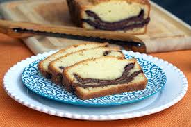

Cake Recipe

NUTELLA POUND CAKE
Ingredients:
- All-purpose flour 1 1/2 cups
- Large eggs 4
- Vanilla essence 2 tsp
- Baking powder 3/4 tsp
- Salt 1/4 tsp
- Unsalted butter, softened 225 g / 1 cup
- Sugar 1 1/4 cups
- jar Nutella 350 g
Cooking Directions:
- Preheat the oven to 160°C (325°F). Lightly grease and flour a 9-by-5-inch loaf pan.
- In a bowl sift flour, baking powder and salt.
- In an other medium bowl lightly beat the eggs with the vanilla essence.
- Using electric beater, combine butter and sugar until creamy. On medium speed gradually beat in the egg mixture until fully incorporated.
- Add the flour mixture in 3 batches, beating at low speed between additions until just incorporated. Continue to beat for 30 seconds longer.
- Spread one-third of the batter in the prepared pan, then spread half of the Nutella on top. Repeat with another third of the batter and the remaining Nutella. Top with the remaining batter. Lightly swirl the Nutella into the batter with a butter knife. Do not over mix.
- Bake the cake for about 1 hour and 15 minutes, until a toothpick inserted in the center comes out clean.
- Let the cake cool in the pan for 15 minutes then invert the cake onto a wire rack.
- Turn it right side up and let cool completely, about 2 hours. Cut the cake into slices and serve.